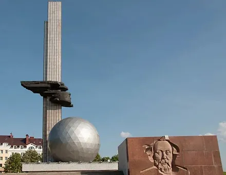
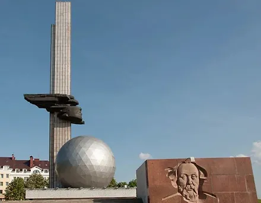
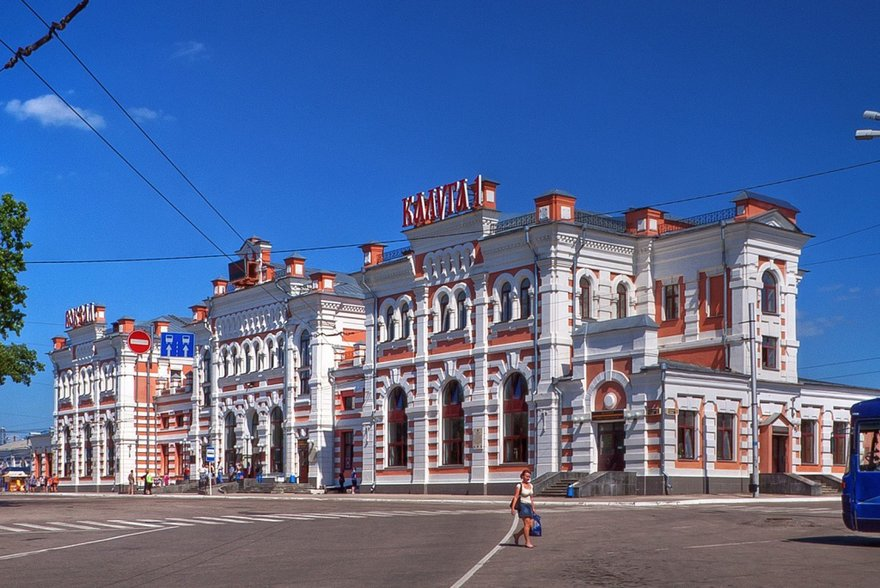
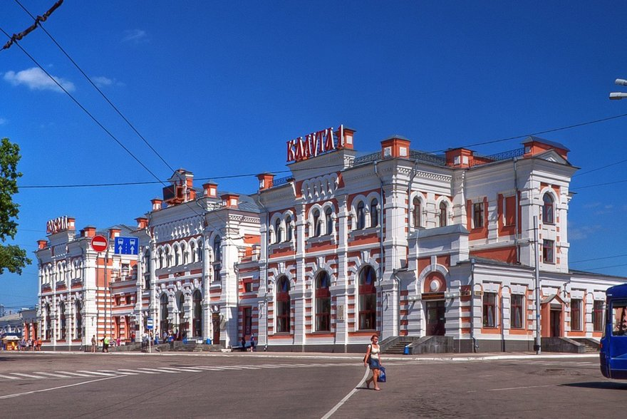

Город Калуга

История создания
Калуга – административный центр Калужской области Российской Федерации. Калуга впервые упоминается в грамоте литовского князя Ольгерда в 1371 году. Этот год считается датой основания города. В 1389 году он окончательно вошел в состав Московского княжества. С этого времени судьба Калуги неразрывно связана со становлением и историей государства Российского.
С образованием 5 июля 1944 года Калужской области, город Калуга стал её административным центром. В 1967 году Калужская область была награждена орденом Ленина, а в 1971 году, в год своего 600-летия, Калуга была награждена орденом Трудового Красного Знамени.
13 октября 2013 года Калуга стала столицей Олимпиады "Сочи - 2014".
7 января 2020 года Калуга официально стала новогодней столицей России 2021 года. Ее символ — Хрустальная снежинка — была передана представителям калужан на городском празднике в Рязани.
Интересные места
Калужский областной драматический театр
Калужский областной драматический театр, один из старейших театров России, был открыт в 1777 году. За более чем двухсотлетнюю историю своего существования театр всегда был одним из крупнейших в России очагов русской театральной традиции.
Сегодня Калужский драматический театр входит в число сильнейших российских региональных театров. В труппе играют талантливые актеры, от маститых народных и заслуженных артистов до одаренной молодежи. Спектакли идут на трех сценических площадках.
Разнообразный репертуар будет интересен как взрослым, так и детям. Уютные интерьеры, выставки художественных произведений в зрительских фойе и живая музыка в антрактах –дополнят впечатление от просмотра спектаклей и подарят самые прекрасные воспоминания гостям театра.
Калужский музей космонавтики
Калужская земля тесно связана с развитием космонавтики – многие годы здесь жил основоположник теоретической космонавтики Константин Эдуардович Циолковский. Калуга стала полигоном для прорывных идей о покорении космического пространства. Значение идей Циолковского о полётах в космос никогда не вызывало сомнений среди космонавтов и инженеров отрасли. В автобиографии «Дорога в космос» Гагарин писал: «Ещё в космосе я решил обязательно побывать в старинном русском городе Калуге - колыбели межзвёздных полётов». Конструктор №1 Сергей Королёв всеми силами способствовал открытию первого в мире музея космонавтики именно в городе Циолковского. В советскую эпоху бренд «колыбель космонавтики» прочно закрепился за Калугой и продолжает служить символом города и в наши дни.
Калужский музей истории космонавтики был открыт в 1967 году. В его создании принимали участие главный конструктор космической техники Сергей Королев и первый космонавт Юрий Гагарин.
Ни в одном городе нет столько космических достопримечательностей, сколько их найдется в Калуге. Они образуют космический маршрут по городу – один из главных в калужском регионе. На пути музеи, памятники, места, связанные с Циолковским, Чижевским, космонавтами и специалистами космической отрасли, побывавшими в Калуге с визитами.

Гостиный двор
Гостиный двор является архитектурной доминантой главной исторической площади Калуги – площади Старый Торг. Это одна из самых грандиозных построек купеческой Калуги. Оригинальное сооружение сохранилось до наших дней с конца XVIII века, так что комплекс признан объектом культурного наследия федерального значения. Уникальность калужского Гостиного двора подчеркнута его архитектурой – в ней сочетаются элементы готического, романского и древнерусского стилей. Любопытно, что автор проекта до сих пор неизвестен, по архитектору, начавшему возведение постройки, Гостиный двор стали относить к работам П.Р. Никитина. В 2015 году завершилась масштабная реставрация историко-архитектурного комплекса Гостиного двора, и теперь комплекс предлагает самые разнообразные активности: здесь можно провести целый день.
Гостиный двор — одна из визитных карточек старой Калуги, расположенный на площади Старый торг. В плане он представляет собой четырехугольник и состоит из 14-ти корпусов, предназначенных для торговли. Строительство Гостиного двора продолжалось до 1823 года. Во внутреннем дворе комплекса проводятся фестивали, концерты и ярмарки, а для детей построена постоянно действующая деревянная игровая площадка.
Галлерея
 

 
